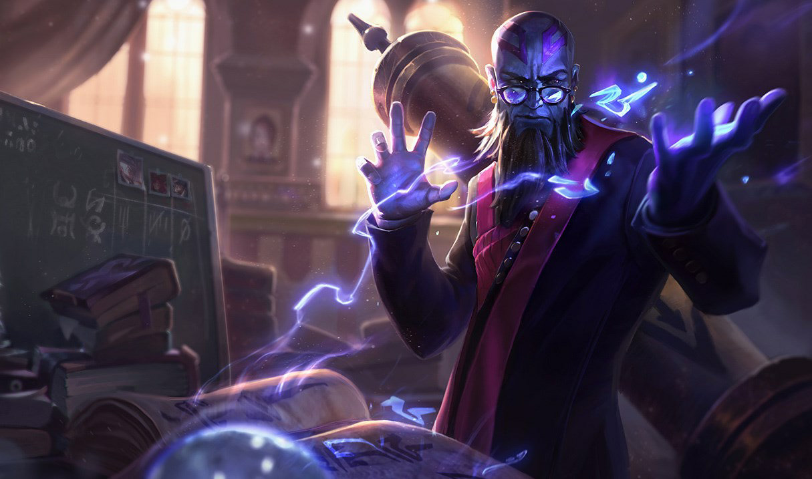

Glossary: eSports, U.S. Law, and Professional League of Legends-related terminology.
(Image via Riot Games).
This glossary is unfinished and will continue to be developed in my free time. It is intended to increase the accessibility of this project to those unfamiliar with eSports to improve overall awareness and exposure for eSports labor rights issues.
LoL-related and eSports
League of Legends: Commonly abbreviated as “LoL,” League of Legends is a multiplayer online battle arena (MOBA) video game that was released by Riot Games in 2009. It follows a free-to-play (FTP) business model and makes the majority of its revenue through in-game microtransactions where players (referred to as “summoners”) can purchase items such as cosmetics (referred to as “skins”) or new playable characters (referred to as “champions”). It has been generally been considered a major eSport in North America since the Season 1 World Championship in June of 2011 (although some argue it begins earlier, with League of Legends being a featured eSport at the 2010 World Cyber Games).
NA LCS or LCS = League of Legends North American Championship Series: This refers to the the North American League of Legends professional eSports league run and owned by Riot Games. The LCS is the highest level of competition for professional North American League of Legends players featuring 10 franchised teams with each team having a roster capped at 10 athletes. “LCS” can also refer to the company “League of Legends Championship Series, LLC.” itself, which is a Delaware Limited Liability Company that is, most importantly, a subsidiary of Riot Games, Inc. It is used for the majority of contracts signed by between Riot Games and its leagues' players, teams, broadcasting talent, sponsors, etc. and officially licensed broadcasting of LCS matches and related content.
NA CS or CS = League of Legends North American Challenger Series: The Challenger Series, within this project, only refers to the second highest level of competition for professional North American League of Legends players (prior to 2018 when it was discontinued due to franchising) featuring six teams with each team having a roster capped at 10 players. The purpose of the Challenger Series was to give new teams the opportunity to be promoted into the LCS. The top 2 in teams in the CS League would face off against the two lowest-placing LCS teams at the end of each competition year, with the winners of a promotion series either earning or maintaining a slot for the next LCS season.
Elo-Boosting: "Elo-Boosting" refers to a rule-violation where a player uses another player's account to "boost" or increase their in-game ranked Elo (a method of calculating relative skills levels of players that results in an Elo score or metric) past its current level. This is commonly done as a service for players who could not increase their Elo-level through their own gameplay in exchange for monetary payment, but boosting could also be done as a favor or for personal use. In terms of competitive rulings or punishments given out by Riot Games to players, this typically only refers to services provided for financial benefit of some kind.
Ghosting: “Ghosting” refers to a rule violation where a player spectates an opponent player's stream in order to gain an competitive advantage during the match. This can also include the use of the in-game spectator client by a third party to provide team-specific information to players within the game to give them a competitive advantage.
Griefing: “Griefing” refers to a rule-violation where a player deliberately irritates and harasses other players within the game and/or uses aspects of the game in unintended ways to harm the enjoyment or well-being of other players.
Poaching: "Poaching" refers to a rule-violating act where a contracted member of an LCS team or an affiliate (such as a team sponsor or business partner) solicits, lures, or makes an offer of employment to an individual who is already contracted to an LCS team in some capacity. This can also be interpretted to include the encouraging of said individual to breach or terminate their contract with their current team.
Scripting: "Scripting" usually refers to the rule-violating action of utilizing programs that make your character (or "champion") complete movements and actions automatically or at unprecedented, robotic speed and accuracy. Scripts are commonly used to automatically dodge enemy attacks and perfectly aim attacks back at enemy champions. People who use scripts are labelled "scripters."
Streaming: “Streaming” refers to the broadcasting of game content on platforms such as Twitch and YouTube, typically for the purpose of generating revenue through sponsorships, subscriptions, running ads, and agency partnerships. It can also be used as a platform for professional eSports players to interact with their fanbases.
The Summoner's Code: "The Summoner's Code" refers to a code of conduct that every registered player—along with Riot's Terms of Use (ToS) and intellectual property clause—is bound by. It typically is cited by Riot in punishments for harassment, griefing, and all negative social interactions with other users. It has also been cited in official LCS competitive rulings.
If any eSports/League of Legends terminology or slang used and/or referenced in this project does not appear to be featured in this glossary or you would simply like to learn more, please refer to websites such as LoL Gamepedia and the official Riot Games eSports site for more information.
U.S. Law
Collective Bargaining and CBAs: "Collective Bargaining" refers to negotiations between an employer and a group of employees to establish or renegotiate working conditions, benefits, and other workers' rights related agreements. "CBAs" or "Collective Bargaining Agreements" refer to a legally binding contract signed between an employer and an NLRA-recognized union of contracted employees that regulates all terms and conditions of work, as well as compensation and other benefits. These are typically used to resolve work condition or pay related disputes between an employer and unionized employees.
Independent Contractor: An "Independent Contractor" refers to a person or business that performs work or services for another party as a non-employee. This differs from being an employee in two main areas. First, independent contractors are not entitled to benefits typically associated with employment, such as unionization and collective bargaining rights and employee benefits such as healthcare and retirement 401(k). Second, independent contractors are responsible for paying their own federal income, Social Security, and Medicare taxes individually. This means that one uses different forms for income reporting (1099-MISC instead of W-2) and tax witholding/paying (Paying via Quarterly Estimated Taxes instead of your employer withholding taxes based on a W-4 Form).
NLRA = National Labor Relations Act: The NLRA is an act enacted by U.S. Congress in 1935 in an effort to establish and protect the rights of employees. It guarantees rights to unionize, engage in collective bargaining, and collective actions such as strikes and walk-outs. For this project, it is important to recognize that the NLRA only protects and recognizes unions formed independently from employers and by legally recognized employees (I.E. one cannot be an independent contractor and establish a union).
P-1A Visa: A P-1A Visa is a visa granted by the U.S. Citizenship and Immigration Services branch of the Department of Homeland Security. It applies to "you if you are coming to the U.S. temporarily to perform at a specific athletic competition as an athlete, individually or as part of a group or team, at an internationally recognized level of performance," as per the U.S. Citizenship and Immigration Services website. They are significant because they allow for international eSports players to compete in the North American region, depending on a subjective analysis of whether or not eSports players and competitions demonstrate an "internationally recognized level of performance."